Grove · a Context Harness for coding agents
Agents write the code.
You steer the context.
The sky behind this page is a project’s memory. Ask for something, and watch the right memories come down to meet your prompt.
A demo: nothing is actually running.
The premise
You no longer write the final artifact.
You manage what the agents know.
ACP standardized how software talks to AI. Grove is the layer above it: it replaces the client with context, so the triad becomes human ⇄ context ⇄ agent. Every feature is one move on that context.
01Capture
Bring the outside in.
Drop a brief, a brand guide or a reference into Studio and it becomes context. Shared Assets are hard-linked into every dependent task, so each agent reads the same file. Agents capture too: a web search, a Figma frame, any MCP fetch.
Drag the PDF in yourself, or drop a real file on the window.
- brief.mdinput/
- checkout-layoutsketch/
- brand-guide-v3.pdfinput/
- checkout-frame.pngresource/
02Organize
Notes condense into memory.
Agents leave short notes as they work: decisions, corrections, lessons, each tied to the task and chat it came from. On a schedule, or early after enough notes, an organizer agent merges them into durable memories, titled, tagged, scored and linked. New sessions search Memory before they start. The sky on this page is that mind map.
Hover a new star to read the memory.
0 pending logs
03Inject
Push what you know. Let agents pull the rest.
Every session starts with Agent context: workspace instructions, Memory, MCP servers and skills, shown with their share of the budget. On top, you push files, sketches and memories into the prompt, and the agent pulls the rest through Grove’s MCP tools. The Memory pill shows exactly what was read this turn.
- InstructionsWorkspace Instructions for atlas-web
- MemoryNew sessions search Memory before they start
- MCPGrove’s tools, plus the servers you added
- SkillsInstalled for this agent
Rebuild the order summary to match the sketch.
grove_sketch_readcheckout-layoutgrove_read_notestask notesRebuilt the summary from the sketch. Totals stay in integer cents; tax now comes from the server.
Summary.tsx +42 −1704Negotiate
Settle the work in context.
Agents ask before they act, with permission requests and surveys you can answer in the chat or inline from the Dashboard’s Needs you list. You answer the work with line-level review comments, then send them all to the agent: one diff addresses every comment, and you approve the diff. Commit, rebase, merge and archive follow in one step.
const total = subtotal + taxCents; <Row label="Tax" value={fmt(taxCents)} /> <Row label="Estimated tax" value={fmt(taxCents)} />Label should say “Estimated tax”, it’s calculated at payment.
Resolved by agent <Row strong label="Total" value={fmt(total)} /> <Button>Pay now!</Button> <Button>Pay {fmt(total)}</Button>Brand voice: no exclamation marks. Show the amount instead.
Resolved by agentpnpm test checkoutAlso waiting in Dashboard · Needs youResults
Feed the harness well.
The rest follows.
Ten agents in parallel is a topology. Shipping fast is a result. Each task gets its own git worktree and terminal session, so agents don’t collide, and when they need each other, they delegate.
<grove-meta> messages, not strings glued through prompts.Buddy
A teammate that stays on.
A Buddy is a long-lived assistant with a name, a role and its own Memory, in one continuous conversation. It does small things itself and hands session-sized work to task agents, then follows it back to you. It is the harness, running while you’re away.
- Delegates, then follows upSends work to an existing task, a new task, or a subagent of its own, and tracks each one until it’s done or needs you.
- Runs routinesScheduled runs it can set up for itself, like a daily release check.
- RemembersIts own Memory, organized in the background like a project’s.
- Answers on IMBind a Buddy to Feishu, Lark or WeChat and talk to it from there.
- Keeps the threadSwitch the agent underneath; the earlier conversation stays readable and is handed over.
Orbit
One quiet workspace for all of it.
Orbit is Grove’s interface. The New page starts every task with the composer you used above; the Dashboard shows what needs you; every part of the harness has a page of its own. These are the real pages.
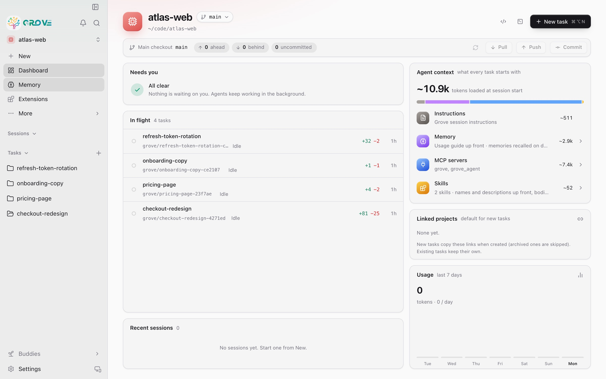
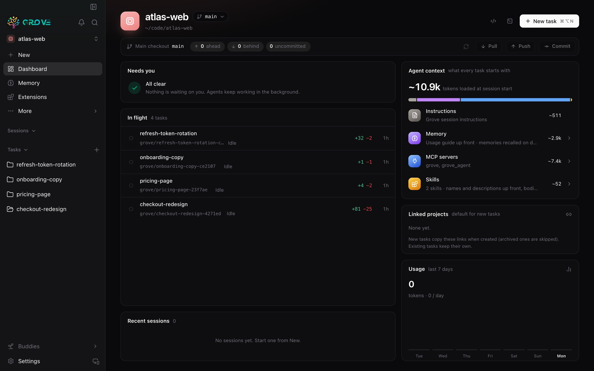
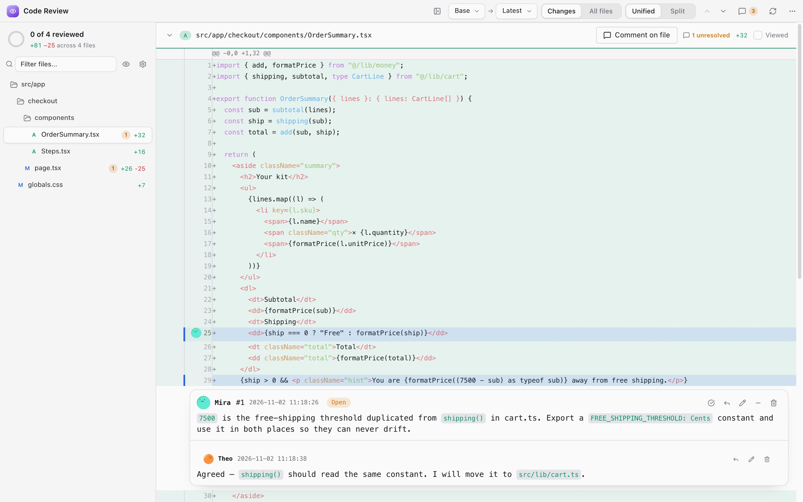
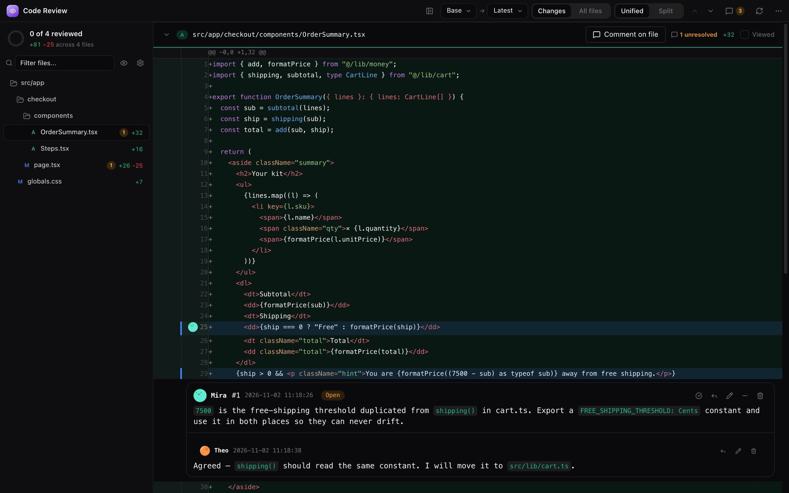
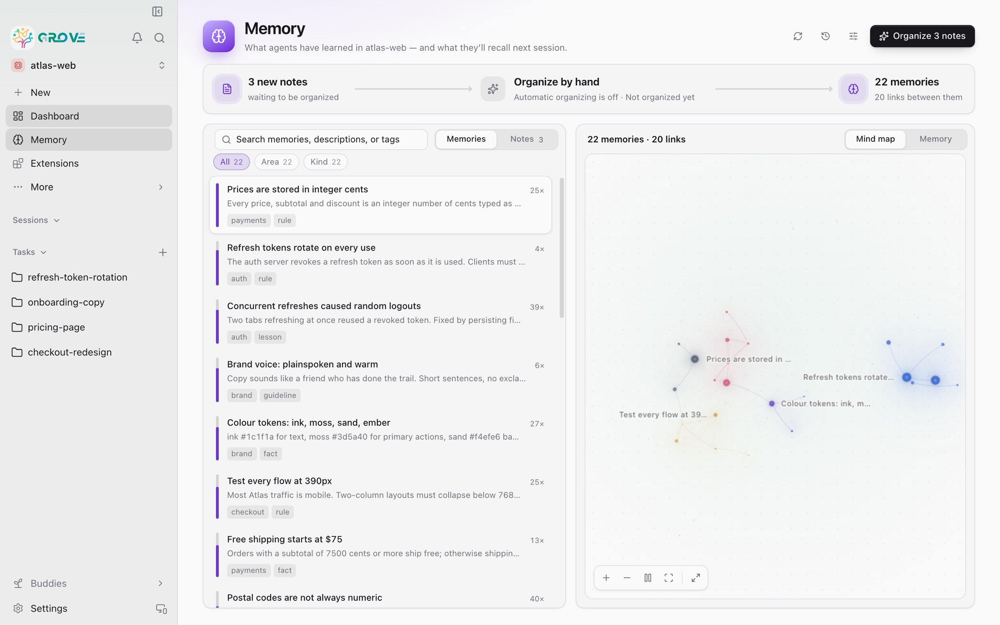
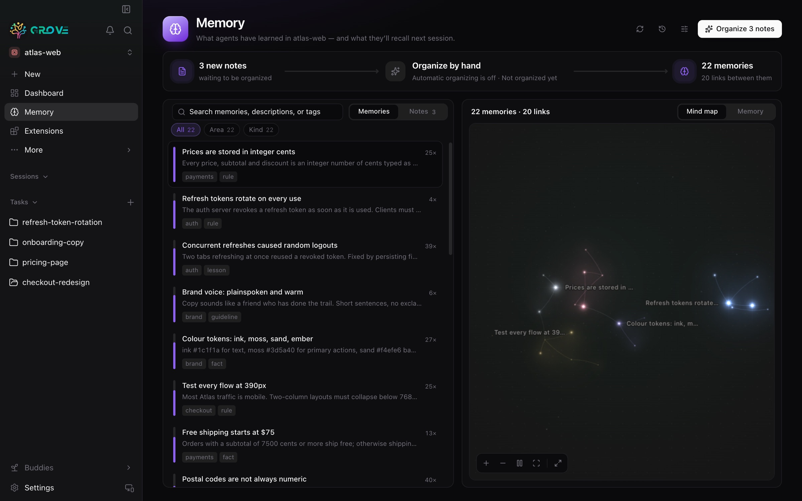
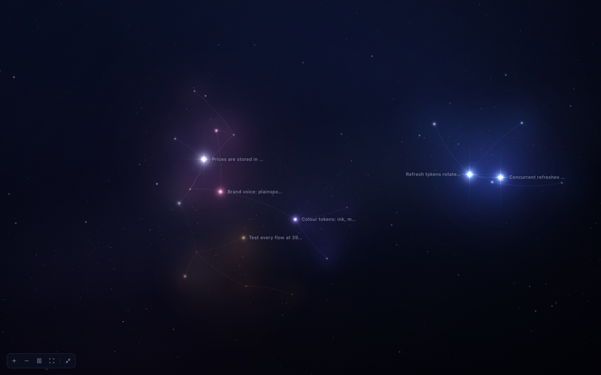
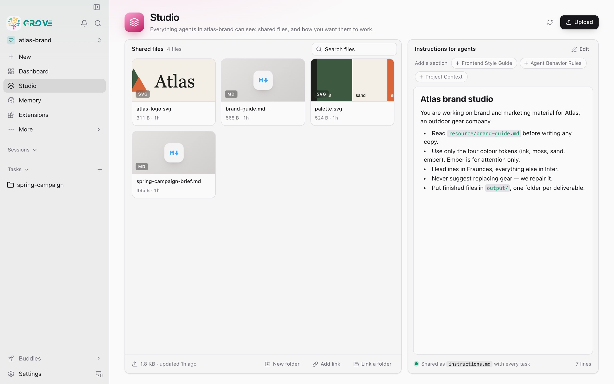
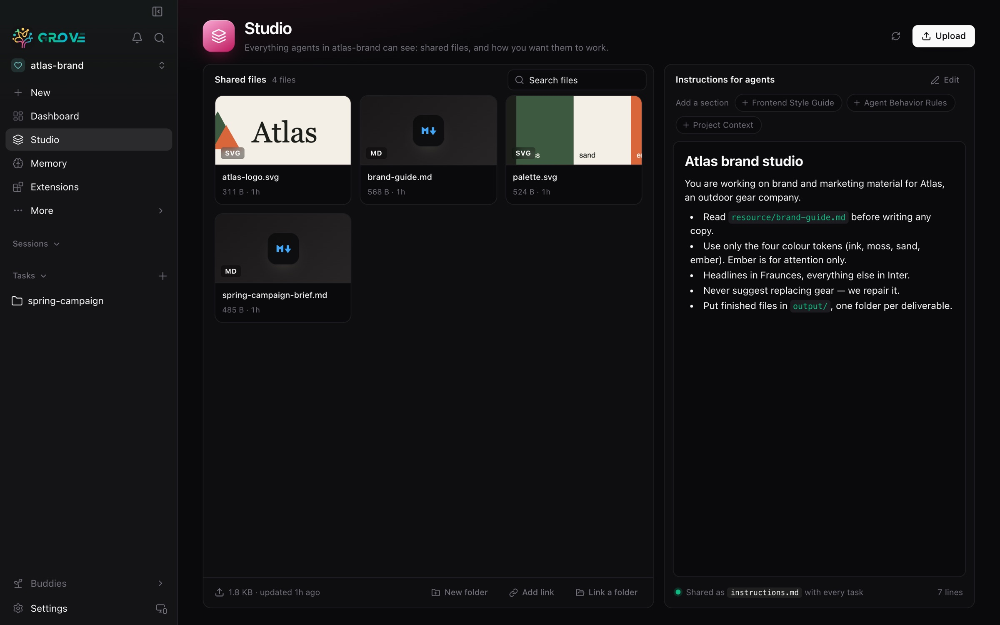
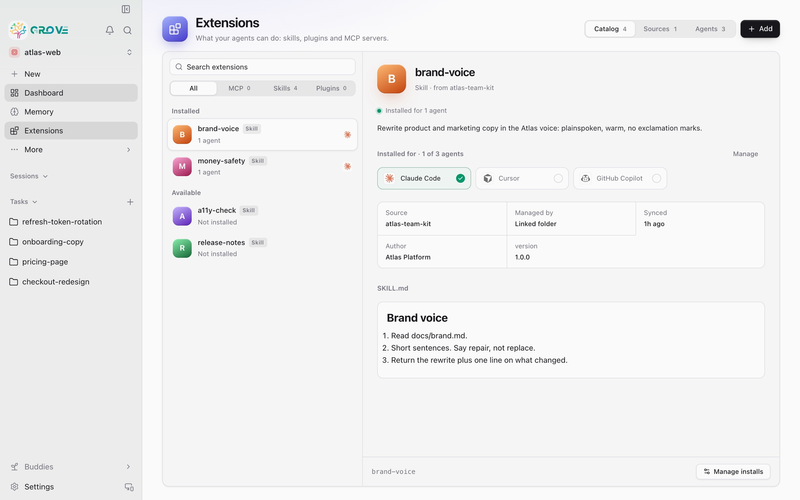
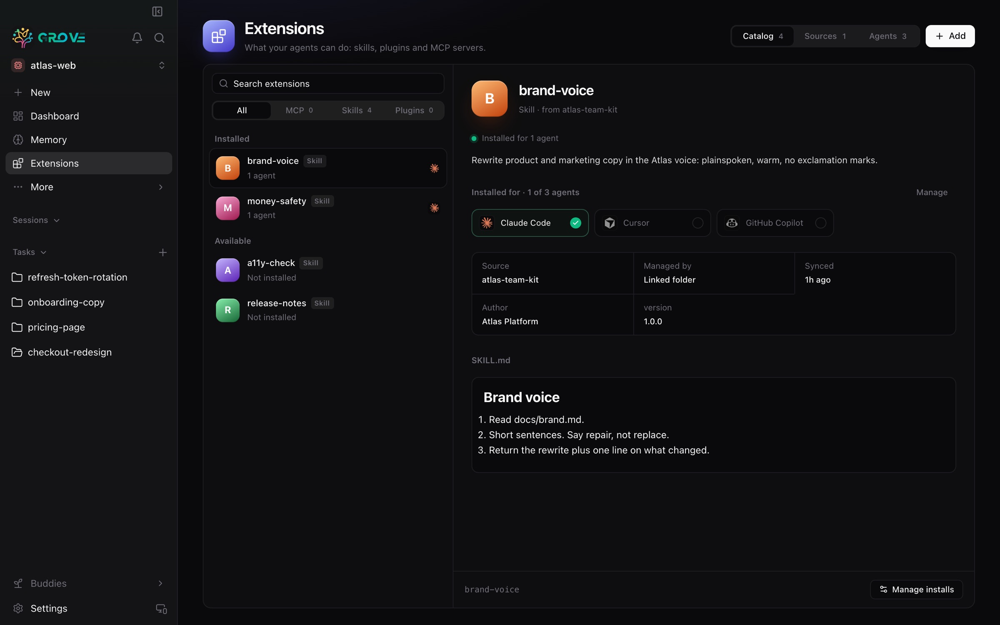
What needs you, what’s in flight, and what every task starts with: instructions, Memory, MCP servers and skills.
Real screenshots from a demo project, no agent sessions running.
Every coding agent you use.
Ten built in, three more ACP-ready, and anything that speaks ACP over stdio or HTTP plugs in with one entry. Define Custom Agents as personas: a base agent, system prompt and effort level, reusable across tasks.
- Claude Code
- Codex
- Gemini CLI
- GitHub Copilot
- Cursor Agent
- Junie
- Trae CLI
- Kimi
- Qwen
- OpenCode
- HermesACP-ready
- KiroACP-ready
- OpenClawACP-ready
- Your own: ACP over stdio or HTTP
One harness, five surfaces.
One binary. The same tasks, agents and worktrees in your browser, a native window, the terminal and your phone, plus a walkie-talkie. Every frame here is the real thing, from a demo project.
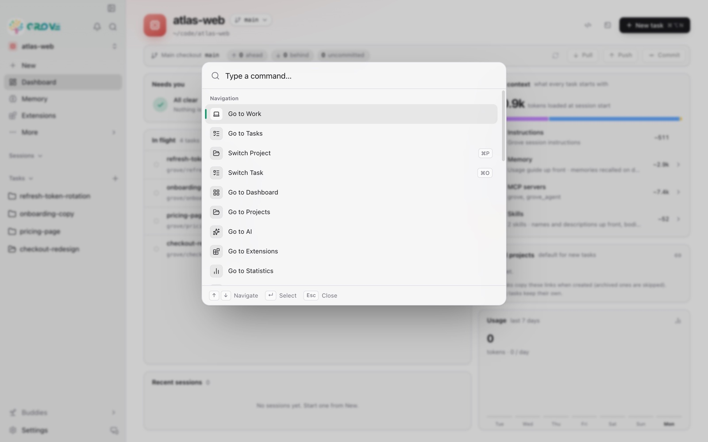
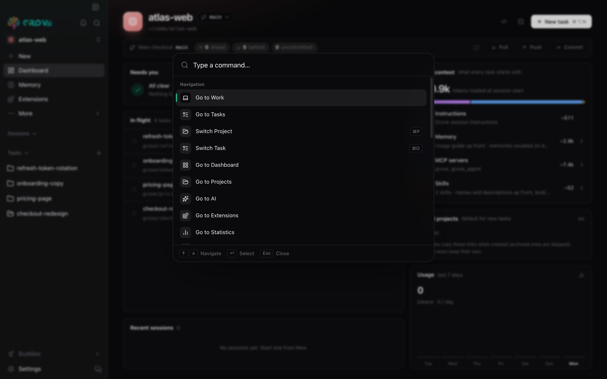
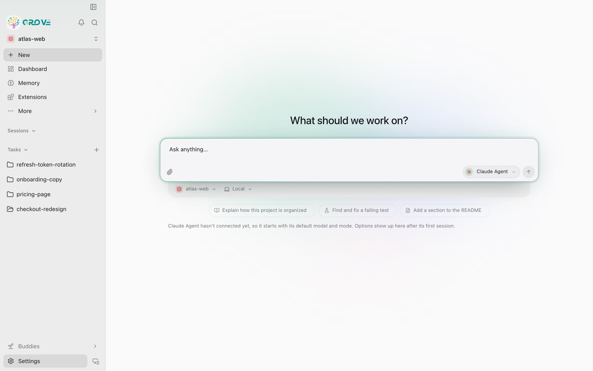
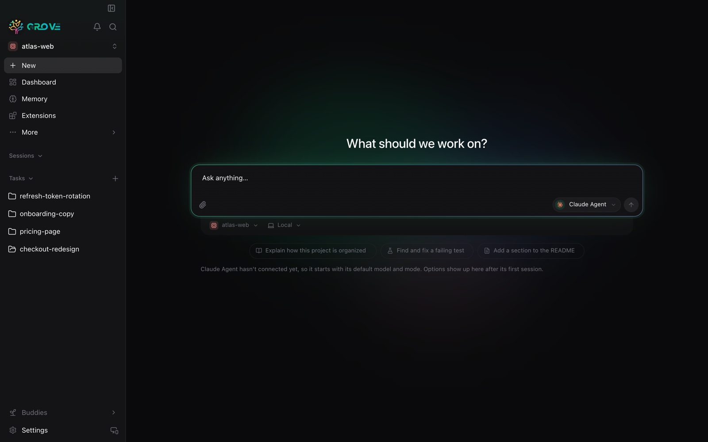
┌────────────────────────────────────────────────────────────────────────────────────────────────────────────────────────────────┐ │ ██████╗ ██████╗ ██████╗ ██╗ ██╗███████╗ │ │ ██╔════╝ ██╔══██╗██╔═══██╗██║ ██║██╔════╝ │ │ ██║ ███╗██████╔╝██║ ██║██║ ██║█████╗ │ │ ██║ ██║██╔══██╗██║ ██║╚██╗ ██╔╝██╔══╝ │ │ ╚██████╔╝██║ ██║╚██████╔╝ ╚████╔╝ ███████╗ │ │ ╚═════╝ ╚═╝ ╚═╝ ╚═════╝ ╚═══╝ ╚══════╝ │ │ │ │ ~/code/atlas-web │ │ Branch: main no remote tracking │ │ +0 -0 lines changed Last commit: 2 hours ago │ └────────────────────────────────────────────────────────────────────────────────────────────────────────────────────────────────┘ │ Active Tasks Archived Tasks │ └────────────────────────────────────────────────────────────────────────────────────────────────────────────────────────────────┘ │ TASK STATUS TARGET ↓ UPDATED │┌ ○ checkout-redesign ──────────────────────────────────────────┐ │ ││ 1:Stats 2:Git 3:Notes [4:Review] j/k scroll │ │ ○ ◈ atlas-web Idle main — 1 hour ago ││───────────────────────────────────────────────────────────────│ │ ○ refresh-tok Idle main 1 1 hour ago ││ Review Comments (3 open, 1 resolved, 0 outdated) │ │ ○ onboarding- Idle main 0 1 hour ago ││ │ │ ○ pricing-pag Idle main 1 1 hour ago ││ [#1] 💬 OrderSummary.tsx L29 │ │❯ ○ checkout-re Idle main 2 1 hour ago ││ │ Mira: │ │ ││ │ `7500` is the free-shipping threshold duplicated from │ │ ││ │ `shipping()` in cart.ts. Export a │ │ ││ │ `FREE_SHIPPING_THRESHOLD: Cents` constant and use it in │ │ ││ │ both places so they can never drift. │ │ ││ └─ Theo: Agreed — `shipping()` should read the same │ │ │└───────────────────────────────────────────────────────────────┘ ┌────────────────────────────────────────────────────────────────────────────────────────────────────────────────────────────────┐ │ n new Space actions / search Tab panel c config t theme q quit │ └────────────────────────────────────────────────────────────────────────────────────────────────────────────────────────────────┘
┌────────────────────────────────────────────────────────────────────────────────────────────────────────────────────────────────┐ │ ██████╗ ██████╗ ██████╗ ██╗ ██╗███████╗ │ │ ██╔════╝ ██╔══██╗██╔═══██╗██║ ██║██╔════╝ │ │ ██║ ███╗██████╔╝██║ ██║██║ ██║█████╗ │ │ ██║ ██║██╔══██╗██║ ██║╚██╗ ██╔╝██╔══╝ │ │ ╚██████╔╝██║ ██║╚██████╔╝ ╚████╔╝ ███████╗ │ │ ╚═════╝ ╚═╝ ╚═╝ ╚═════╝ ╚═══╝ ╚══════╝ │ │ │ │ ~/code/atlas-web │ │ Branch: main no remote tracking │ │ +0 -0 lines changed Last commit: 2 hours ago │ └────────────────────────────────────────────────────────────────────────────────────────────────────────────────────────────────┘ │ Active Tasks Archived Tasks │ └────────────────────────────────────────────────────────────────────────────────────────────────────────────────────────────────┘ │ TASK STATUS TARGET ↓ UPDATED │┌ ○ checkout-redesign ──────────────────────────────────────────┐ │ ││ 1:Stats 2:Git 3:Notes [4:Review] j/k scroll │ │ ○ ◈ atlas-web Idle main — 1 hour ago ││───────────────────────────────────────────────────────────────│ │ ○ refresh-tok Idle main 1 1 hour ago ││ Review Comments (3 open, 1 resolved, 0 outdated) │ │ ○ onboarding- Idle main 0 1 hour ago ││ │ │ ○ pricing-pag Idle main 1 1 hour ago ││ [#1] 💬 OrderSummary.tsx L29 │ │❯ ○ checkout-re Idle main 2 1 hour ago ││ │ Mira: │ │ ││ │ `7500` is the free-shipping threshold duplicated from │ │ ││ │ `shipping()` in cart.ts. Export a │ │ ││ │ `FREE_SHIPPING_THRESHOLD: Cents` constant and use it in │ │ ││ │ both places so they can never drift. │ │ ││ └─ Theo: Agreed — `shipping()` should read the same │ │ │└───────────────────────────────────────────────────────────────┘ ┌────────────────────────────────────────────────────────────────────────────────────────────────────────────────────────────────┐ │ n new Space actions / search Tab panel c config t theme q quit │ └────────────────────────────────────────────────────────────────────────────────────────────────────────────────────────────────┘
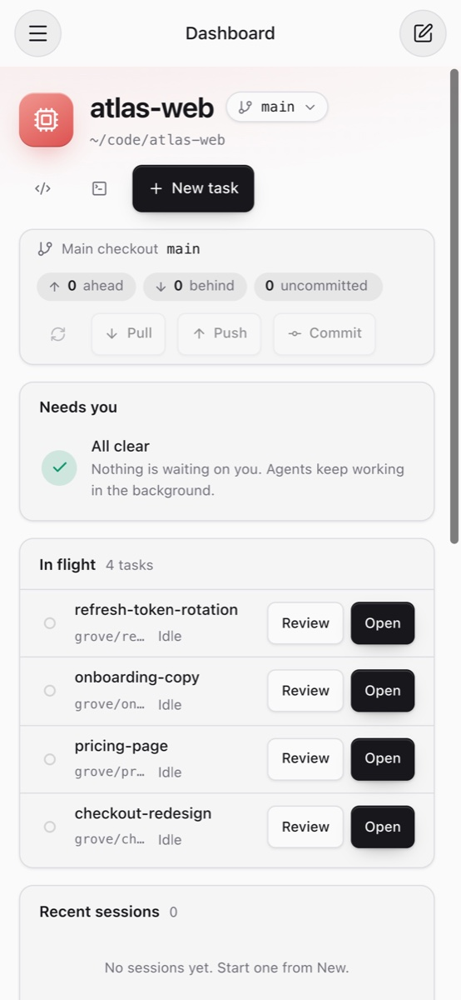
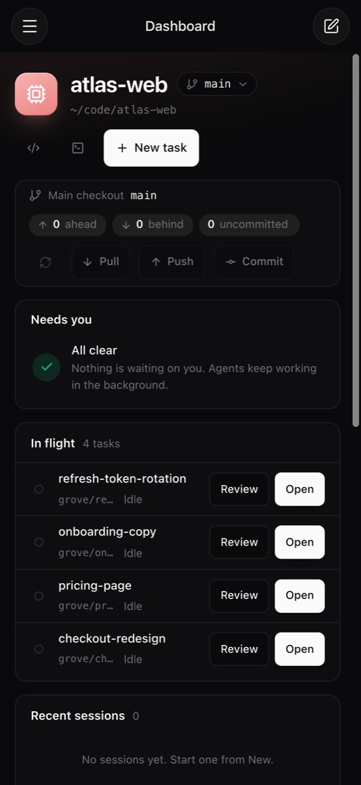
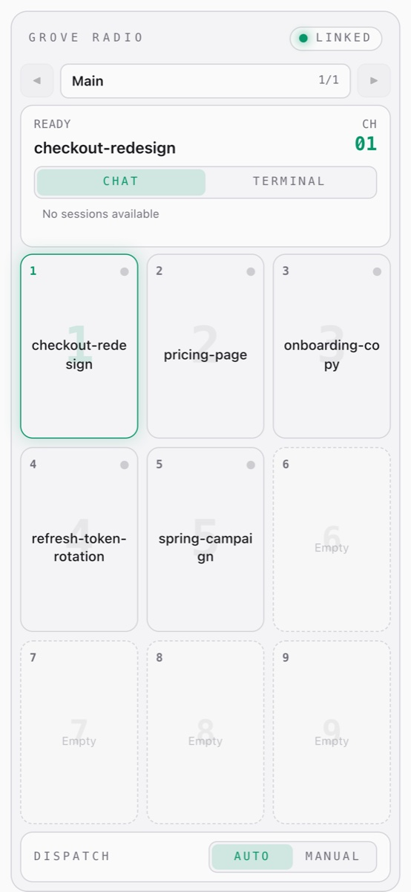
Plugins
Build your own context pipes.
The OS layer stays stable; the policy layer is open. A plugin is a folder with a plugin.json, built against a typed SDK, and it can bring new ways to capture, organize and inject context.
- Panel & sidebar pageYour UI in an isolated iframe, inside the workspace or as a page of its own.
- MCP serverTools for the agent, with the same
groveAPI. - SkillsEach folder with a
SKILL.mdbecomes a Grove skill. - BackendA node process that subscribes to Grove events, runs workflows, adds prompt middleware or connects a new IM.
{ "name": "my-plugin", "version": "0.1.0", "permissions": ["storage:read", "storage:write", "project:read"], "contributes": { "panel": { "title": "My Plugin", "entry": "dist/index.html" }, "sidebar": { "title": "My Plugin", "entry": "dist/index.html" }, "mcp": { "command": "node", "args": ["dist/server.js"] }, "backend": { "command": "node", "args": ["dist/backend.js"] } } }
npm run devwatch + rebuildnpm run publishverify + package a zipInstall
Let your agent install it.
A single binary with the Web IDE embedded. Paste this into Claude Code, Codex, Cursor or any agent; it handles the Homebrew tap, the shell installer, PATH wiring and platform quirks.
Install and configure Grove by following the instructions here: https://raw.githubusercontent.com/GarrickZ2/grove/master/docs/install.md
Or type it yourself
Then, inside any directory
groveresumes your last surfacegrove webbrowser IDE on localhost:3001grove guinative desktop windowgrove tuiterminal UI
Requires Git 2.20+ and tmux 3.0+ or Zellij (not needed on Windows). macOS 12+, Linux, Windows 10/11. MIT licensed.